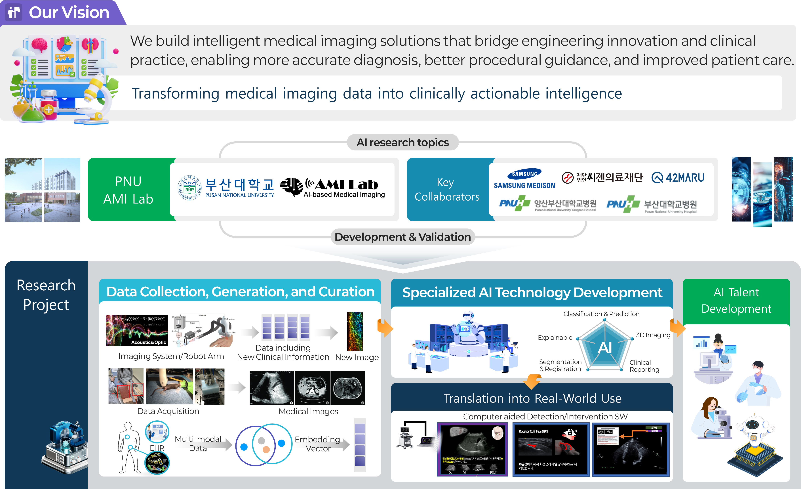
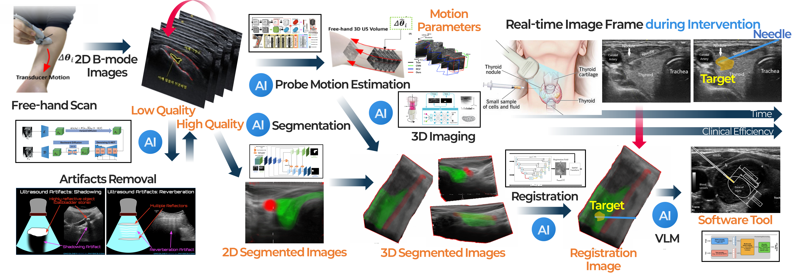
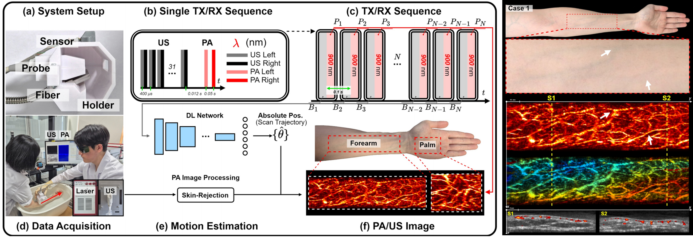
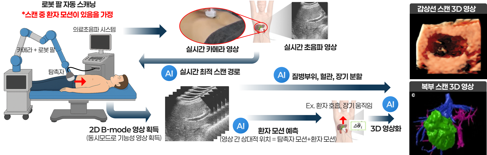
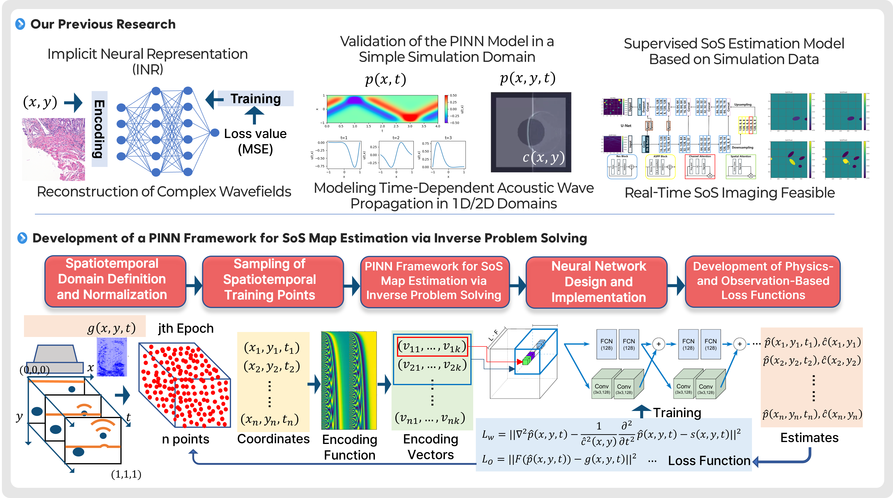
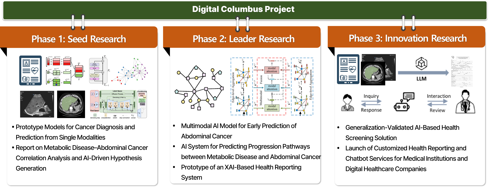
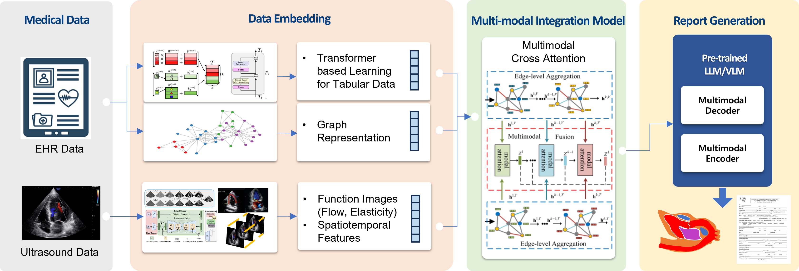
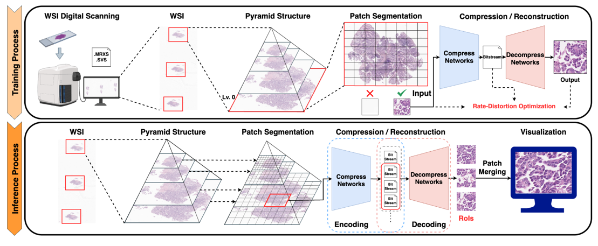
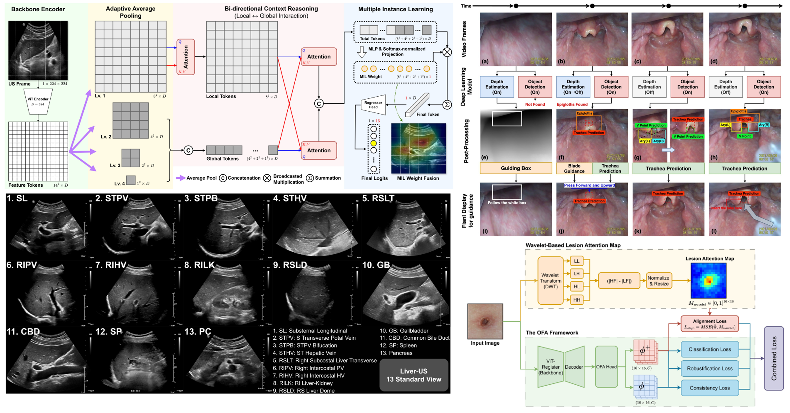
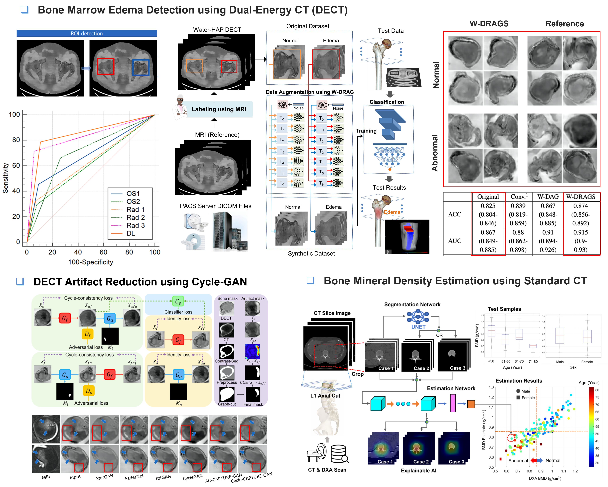

부산대학교 AMILab (AI Medical Imaging Lab) 은 의료기기와 의료데이터를 기반으로 차세대 의료 인공지능 기술을 연구하는 연구실입니다. 특히 초음파, 광음향, CT, MR 등 다양한 의료영상과 생체신호를 활용하여, 실제 임상 현장에서 도움이 될 수 있는 진단, 분석, 가이드 기술을 개발하고 있습니다. AMILab은 단순히 딥러닝 모델의 성능 향상에 그치지 않고, 의료기기의 물리적 원리와 임상적 요구를 함께 고려한 AI 방법론을 지향합니다. 이를 통해 실험실 수준의 알고리즘 개발을 넘어, 의료진이 실제로 활용할 수 있는 임상적으로 의미 있는 지능형 의료영상 기술을 구현하는 것을 목표로 합니다. 주요 연구 주제로는 초음파 및 광음향 영상 재구성, 3D/4D 의료영상 분석, 생체신호 및 멀티모달 건강검진 데이터 기반 질환 예측, 의료진 보조를 위한 실시간 가이드 시스템, 로봇팔을 활용한 자동 초음파 스캔 및 진단 기술, 그리고 의료영상과 판독 리포트·임상 텍스트를 함께 활용하는 비전-언어 모델 (VLM) 기반 의료 AI 등이 있습니다. 이러한 연구는 의료영상 처리, 신호처리, 딥러닝, 컴퓨터비전, 멀티모달 학습을 아우르며, 공학적 방법론과 임상적 활용 가능성을 동시에 추구합니다. 또한 AMILab은 병원 의료진, 국내외 연구기관, 기업과의 긴밀한 협력을 통해 실제 의료 현장의 문제를 해결하는 중개연구(translational research) 를 수행하고 있습니다. 삼성메디슨, 씨젠의료재단, 42MARU, 부산대학교병원, 양산부산대학교병원 등과의 협력을 바탕으로, 데이터 확보부터 알고리즘 개발, 임상 검증, 실사용 확장까지 이어지는 연구 생태계를 구축하고 있습니다. 이를 통해 SCI급 국제학술지 및 MICCAI, IEEE 계열 학회 등 top-tier 연구성과를 창출하는 동시에, 실제 의료기기 및 임상 환경으로의 확장을 지향합니다. AMILab의 연구는 다음과 같은 흐름으로 수행됩니다. 먼저, AI 학습을 위한 의료데이터 수집·생성·정제를 통해 신뢰할 수 있는 데이터 기반을 구축합니다. 그 위에서 의료 문제에 특화된 전문 AI 기술 개발 및 검증을 수행하고, 최종적으로 임상 검증과 실사용 확장을 통해 실제 의료 현장 적용 가능성을 높입니다. 이러한 전 과정을 통해 연구실은 기술 개발에 그치지 않고, 문제를 정의하고 해결하며 임상적 가치까지 연결할 수 있는 AI 인재 양성을 지향합니다. AMILab은 스스로 중요한 문제를 정의하고, 이를 공학적으로 해결하며, 궁극적으로 의료 현장에 기여하고자 하는 학생들에게 훌륭한 연구 환경을 제공합니다. 의료 AI, 의료영상, 컴퓨터비전, 딥러닝, 신호처리, 멀티모달 AI, VLM, 의료 로보틱스 분야에 관심 있는 학생들과의 협력을 환영합니다.
Pusan National University AMILab (AI Medical Imaging Lab) is a research laboratory dedicated to next-generation medical artificial intelligence based on medical devices and healthcare data. In particular, we develop diagnostic, analytical, and guidance technologies that can support real clinical practice by leveraging a wide range of medical imaging modalities and biosignals, including ultrasound, photoacoustic imaging, CT, and MRI. AMILab goes beyond simply improving the performance of deep learning models. We pursue AI methodologies that take into account both the physical principles of medical devices and the practical needs of clinical care. Through this approach, our goal is not limited to laboratory-level algorithm development, but extends to building clinically meaningful intelligent medical imaging technologies that can be truly used by healthcare professionals. Our major research areas include ultrasound and photoacoustic image reconstruction, 3D/4D medical image analysis, disease prediction based on biosignals and multimodal health screening data, real-time guidance systems for assisting clinicians, robotic-arm-based automated ultrasound scanning and diagnosis, and vision-language-model (VLM)-based medical AI that integrates medical images with radiology reports and clinical text. These research topics span medical image processing, signal processing, deep learning, computer vision, and multimodal learning, while pursuing both engineering rigor and clinical applicability. In addition, AMILab conducts translational research aimed at solving real problems in healthcare through close collaboration with clinicians, domestic and international research institutions, and industry partners. In collaboration with Samsung Medison, Seegene Medical Foundation, 42Maru, Pusan National University Hospital, and Pusan National University Yangsan Hospital, we are building a research ecosystem that connects data acquisition, algorithm development, clinical validation, and real-world deployment. Through these efforts, we aim to produce top-tier research outcomes in SCI-indexed journals and leading venues such as MICCAI and IEEE conferences, while also advancing our technologies toward actual medical devices and clinical environments. Research at AMILab follows a full translational pipeline. We first establish reliable foundations through the collection, generation, and curation of medical data for AI training. Building on this foundation, we develop and validate specialized AI technologies tailored to specific medical problems. Ultimately, we seek to expand these technologies into real clinical practice through clinical validation and real-world deployment. Through this entire process, AMILab is committed not only to developing advanced technologies, but also to training AI talent capable of identifying important problems, solving them with engineering approaches, and connecting them to genuine clinical value. AMILab provides an excellent research environment for students who aspire to define meaningful problems on their own, solve them through engineering, and ultimately contribute to healthcare. We welcome students interested in medical AI, medical imaging, computer vision, deep learning, signal processing, multimodal AI, VLMs, and medical robotics.

본 프로젝트는 별도의 위치 센서 없이 프리핸드 방식으로 획득한 2차원 초음파 영상들로부터 3차원 초음파 영상을 복원하는 AI 기술을 개발하는 연구입니다. 일반적인 프리핸드 3차원 초음파는 탐촉자의 위치와 자세를 추적하기 위한 별도 센서나 장비가 필요하지만, 이러한 방식은 시스템 복잡도와 비용을 증가시키고 실제 임상 적용의 유연성을 떨어뜨릴 수 있습니다. 이러한 한계를 극복하기 위해, 본 연구에서는 연속적으로 획득된 2차원 초음파 영상 자체로부터 탐촉자의 움직임을 추정하고 이를 바탕으로 3차원 볼륨을 복원하는 딥러닝 기반 프레임워크를 개발하고 있습니다. 특히 스캔 과정에서의 공간적 연속성과 해부학적 구조의 일관성을 함께 반영함으로써, 보다 정확하고 안정적인 3차원 재구성을 목표로 합니다. 이를 통해 별도 센서 없이도 사용이 간편한 3차원 초음파 영상화를 가능하게 하고, 더 나아가 영상 분할 기술과 결합하여 장기, 혈관, 병변 부위만을 선택적으로 3차원 렌더링해 제시할 수 있는 기술로 확장하고자 합니다. 궁극적으로는 이러한 기술을 질환 진단, 시술 및 수술 계획, 그리고 시술·수술 중 영상 안내에 활용할 수 있는 보조 소프트웨어 도구로 발전시키는 것을 목표로 합니다. 이 연구는 부산대학교 AMILab의 대표적인 초음파 AI 연구 주제 중 하나로, 의료영상의 물리적 원리와 인공지능을 결합하여 실제 임상에 적용 가능한 차세대 영상 기술을 개발하는 중개연구의 성격을 가집니다. 관련 연구는 국제 학술지와 top-tier 학회를 통해 성과를 축적해 왔으며, 현재 한국연구재단(NRF) 기초연구사업, 정보통신기획평가원(IITP) 인공지능융합혁신인재양성사업의 지원을 받아 수행되고 있습니다. 또한 탐촉자 움직임을 보다 정확히 추정하고 고품질의 3차원 영상을 구현하기 위해서는, 입력이 되는 2차원 초음파 영상 자체의 품질이 매우 중요합니다. 이에 따라 본 연구와 연계하여, 제한된 초음파 송수신만으로도 고품질의 2차원 영상을 생성하는 AI 기술을 삼성메디슨의 지원 아래 함께 수행할 예정입니다.
This project focuses on developing AI technologies to reconstruct 3D ultrasound images from 2D ultrasound scans acquired in a free-hand manner, without relying on external position sensors. Conventional free-hand 3D ultrasound systems typically require additional tracking devices to estimate the probe’s position and orientation, but such systems can increase complexity and cost while reducing flexibility in real clinical settings. To overcome these limitations, we are developing a deep learning-based framework that estimates probe motion directly from consecutively acquired 2D ultrasound images and reconstructs a 3D ultrasound volume from them. By incorporating spatial continuity during scanning and anatomical consistency of the target structure, our method aims to achieve more accurate and stable 3D reconstruction. This approach enables practical and user-friendly 3D ultrasound imaging without external sensors, and can be further extended by integrating image segmentation techniques to selectively render organs, vessels, and lesion regions in 3D. Ultimately, we aim to develop this technology into an assistive software tool that can support disease assessment, procedural and surgical planning, and intra-procedural image guidance. This project represents one of the core ultrasound AI research topics at AMILab, Pusan National University, and reflects our broader goal of combining medical imaging physics with artificial intelligence to create next-generation imaging technologies for real clinical use. Related studies have led to research outcomes in international journals and top-tier conferences, and the project is currently supported by the Basic Science Research Program of the National Research Foundation of Korea (NRF) and the AI Convergence Innovation Human Resources Development Program of the Institute of Information & Communications Technology Planning & Evaluation (IITP). In addition, accurate probe motion estimation and high-quality 3D reconstruction strongly depend on the quality of the input 2D ultrasound images. For this reason, we are also pursuing a closely related research direction under the support of Samsung Medison to generate high-quality 2D ultrasound images even with limited ultrasound transmissions and receptions.

본 프로젝트는 기존 초음파 장비에 레이저 장비를 결합하여 광음향(photoacoustic) 영상을 획득하고, 이를 실제 임상에 활용할 수 있는 형태로 확장하는 AI 및 영상 기술을 개발하는 연구입니다. 광음향 영상은 빛과 초음파의 장점을 결합하여 조직의 기능적·혈관학적 정보를 시각화할 수 있는 유망한 영상 기법으로, 특히 미세혈관 구조와 혈류 관련 정보를 비침습적으로 관찰할 수 있다는 장점이 있습니다. 그러나 일반적인 광음향 영상 시스템은 장비 구성이 복잡하고, 영상 획득 범위와 깊이에 제약이 있으며, 자유로운 손 스캔 환경에서 안정적으로 3차원 영상을 얻기가 쉽지 않아 임상적 확산에 한계가 있었습니다. 이러한 한계를 극복하기 위해, 본 연구에서는 초음파 영상을 이용해 탐촉자의 위치와 움직임을 추적하고, 동시에 획득된 광음향 영상을 정합·누적하여 미세혈관의 3차원 구조를 복원하는 프리핸드 3D 광음향 영상 기술을 개발하였습니다. 특히 별도의 위치 센서 없이 초음파 영상 기반으로 탐촉자 움직임을 추정하는 우리의 프리핸드 3D 기술을 접목함으로써, 보다 간편하고 실용적인 3차원 광음향 영상화를 가능하게 하고자 하였습니다. 이를 통해 2차원 단면 수준에 머물기 쉬운 광음향 혈관 영상을 3차원으로 확장하여, 미세혈관 구조를 보다 직관적이고 입체적으로 제시할 수 있는 기반을 마련하였습니다. 나아가 본 연구는 단순한 3차원 재구성에 그치지 않고, 광음향 영상의 임상 활용 범위를 더욱 넓히기 위한 방향으로 발전하고 있습니다. 특히 더 깊은 조직에서도 유용한 정보를 얻을 수 있도록 영상 깊이를 향상시키기 위한 기술적 시도를 함께 수행하고 있으며, 이를 통해 표재성 혈관 영상에 머무르지 않고 보다 다양한 임상 응용으로 확장하고자 합니다. 이 연구는 현재 한국연구재단(NRF) 기초연구사업 지원을 받아 수행되고 있습니다. 향후에는 미세혈관 영상, 기능 영상, 진단 및 치료 가이드 응용까지 확장 가능한 차세대 광음향 영상 플랫폼으로 발전시키는 것을 목표로 하고 있습니다.
This project focuses on developing AI and imaging technologies that combine conventional ultrasound systems with laser devices to acquire photoacoustic images and extend them toward practical clinical use. Photoacoustic imaging is a promising modality that combines the advantages of light and ultrasound to visualize functional and vascular information in biological tissues. In particular, it enables noninvasive observation of microvascular structures and blood-related information. However, conventional photoacoustic imaging systems often involve complex hardware configurations, have limitations in imaging range and penetration depth, and face challenges in obtaining stable 3D images in free-hand scanning settings, which has hindered their broader clinical adoption. To overcome these limitations, we developed a free-hand 3D photoacoustic imaging technique that tracks probe position and motion using ultrasound images and reconstructs 3D microvascular structures by registering and accumulating simultaneously acquired photoacoustic images. In particular, by incorporating our free-hand 3D technology that estimates probe motion from ultrasound images without external position sensors, we aimed to enable a more practical and user-friendly approach to 3D photoacoustic imaging. This approach makes it possible to move beyond 2D cross-sectional photoacoustic vascular images and reconstruct them in 3D, providing a more intuitive and volumetric representation of microvascular structures. Furthermore, this research goes beyond simple 3D reconstruction and is evolving toward broader clinical applications of photoacoustic imaging. In particular, we are also exploring technical approaches to improve imaging depth so that useful information can be obtained from deeper tissues, thereby extending the technology beyond superficial vascular imaging toward a wider range of clinical applications. This project is currently supported by the Basic Science Research Program of the National Research Foundation of Korea (NRF). In the long term, we aim to advance this work into a next-generation photoacoustic imaging platform that can support microvascular imaging, functional imaging, and applications in diagnosis and therapy guidance.

본 프로젝트는 로봇팔과 카메라를 활용하여 보다 자동화되고 일관된 초음파 스캔을 구현하는 AI 및 로보틱스 기술을 개발하는 연구입니다. 일반적인 초음파 검사는 검사자의 숙련도와 손기술에 크게 의존하기 때문에, 같은 환자를 스캔하더라도 검사자에 따라 탐촉자 위치, 각도, 압박 정도, 스캔 경로가 달라질 수 있습니다. 이러한 변동성은 영상 품질과 재현성에 영향을 주며, 장기 추적 관찰이나 정량적 비교가 중요한 임상 상황에서는 한계로 작용할 수 있습니다. 본 연구는 다소 높은 시스템 비용이 필요하더라도, 로봇팔과 카메라를 결합한 자동 스캔 기술을 통해 사람 손 스캔의 비일관성을 줄이고 보다 표준화된 초음파 획득을 가능하게 하는 것을 목표로 합니다. 이를 위해 본 연구에서는 카메라 기반 컴퓨터 비전 기술을 이용해 환자의 자세와 해부학적 위치를 인식하고, 적절한 스캔 부위를 자동으로 탐색하는 기술을 개발하고 있습니다. 또한 카메라를 통해 관찰되는 환자의 반응과 움직임, 그리고 초음파 영상 시스템으로부터 실시간으로 획득되는 초음파 영상을 함께 활용하여, 로봇팔이 탐촉자의 위치와 자세를 적절하게 조절하도록 설계하고 있습니다. 이를 통해 단순히 정해진 경로를 반복하는 수준을 넘어, 환자 상태와 영상 품질에 따라 유연하게 반응하는 지능형 초음파 스캔이 가능하도록 하고자 합니다. 특히 로봇팔은 탐촉자의 위치와 자세를 정밀하게 제어하고 기록할 수 있기 때문에, 고품질의 3차원 초음파 영상 획득에도 유리한 기반을 제공합니다. 반면 딥러닝 모델은 로봇 자체의 위치 추정보다는 환자의 미세한 움직임이나 호흡, 연부조직 변형으로 인해 발생하는 오차를 보정하는 데 집중할 수 있어, 보다 정밀하고 안정적인 3차원 재구성과 자동 진단 보조가 가능해집니다. 궁극적으로는 이 기술을 자동 초음파 스캔, 표준 단면 획득, 3차원 영상화, 진단 및 시술 보조까지 아우르는 통합형 지능 초음파 플랫폼으로 발전시키는 것을 목표로 합니다. 이 연구는 한국연구재단(NRF) 기초연구사업, 정보통신기획평가원(IITP) 인공지능융합혁신인재양성사업 지원을 받아 수행하고 있습니다.
This project focuses on developing AI and robotics technologies for more automated and consistent ultrasound scanning using a robotic arm and cameras. Conventional ultrasound examinations rely heavily on the operator’s skill and manual technique, which means that probe position, angle, applied pressure, and scanning path can vary even when examining the same patient. Such variability affects image quality and reproducibility, and can become a significant limitation in clinical scenarios where longitudinal follow-up or quantitative comparison is important. Although this approach requires a higher system cost, our goal is to reduce the inconsistency of manual scanning and enable more standardized ultrasound acquisition through automated scanning technology that combines a robotic arm and cameras. To achieve this, we are developing camera-based computer vision techniques to recognize the patient’s pose and anatomical location and to automatically identify appropriate scanning regions. In addition, the robotic arm is designed to adjust the probe position and orientation appropriately by jointly using patient responses and movements observed through cameras, together with real-time ultrasound images acquired from the ultrasound imaging system. In this way, our system goes beyond simply repeating pre-defined trajectories and aims to enable intelligent ultrasound scanning that can flexibly respond to patient condition and image quality. In particular, because the robotic arm can precisely control and record the probe’s position and orientation, it provides a strong foundation for acquiring high-quality 3D ultrasound images. At the same time, deep learning models can focus less on estimating the probe position itself and more on compensating for errors caused by subtle patient motion, respiration, and soft-tissue deformation, enabling more precise and stable 3D reconstruction and automated diagnostic assistance. Ultimately, we aim to advance this technology into an integrated intelligent ultrasound platform that encompasses automated ultrasound scanning, standard-plane acquisition, 3D imaging, and support for diagnosis and interventions. This project is supported by the Basic Science Research Program of the National Research Foundation of Korea (NRF) and the AI Convergence Innovation Human Resources Development Program of the Institute of Information & Communications Technology Planning & Evaluation (IITP).

본 프로젝트는 물리정보신경망(PINN)을 활용하여 조직 내부의 음속(Speed of Sound, SoS) 분포를 추정하고, 이를 영상화하는 AI 기술을 개발하는 연구입니다. 초음파 영상에서 음속은 파의 전파 속도를 결정하는 핵심 물리 파라미터로, 조직의 종류와 상태에 따라 달라질 수 있습니다. 따라서 음속 맵은 기존 B-mode 영상만으로는 얻기 어려운 추가적인 조직 특성 정보를 제공할 수 있으며, 향후 새로운 진단 지표로 활용될 가능성이 있습니다. 그러나 음속 분포를 추정하는 문제는 관측된 초음파 신호로부터 내부 물성을 역으로 추론해야 하는 대표적인 역문제로서, 계산이 복잡하고 잡음과 측정 조건 변화에 민감하여 안정적인 복원이 쉽지 않습니다. 이러한 문제를 해결하기 위해, 본 연구에서는 음파의 전파를 지배하는 물리 법칙과 실제 관측 데이터를 동시에 반영하는 PINN 기반 프레임워크를 개발하고 있습니다. 먼저 비교적 단순한 1D 및 2D 시뮬레이션 도메인에서 시간에 따른 음파 전파를 재현하고, 이를 통해 PINN 모델의 타당성과 학습 전략을 검증하고 있습니다. 나아가 시공간 도메인 설정과 정규화, 학습용 샘플 포인트 구성, 미분 가능한 좌표 인코딩 기법, 신경망 구조 설계, 그리고 물리식 잔차와 관측 데이터 오차를 함께 반영하는 손실함수 개발을 통해, 음속 맵 추정이 가능한 PINN 모델과 학습 프레임워크를 구축하고자 합니다. 이를 통해 단순한 지도학습 기반 추정을 넘어, 물리적으로 더 일관되고 일반화 가능한 음속 복원을 목표로 합니다. 궁극적으로는 본 기술을 초음파 기반의 새로운 정량 영상 기술로 발전시켜, 실시간 또는 준실시간 수준에서 음속 영상을 추정하고 임상적으로 활용 가능한 형태로 확장하는 것을 목표로 합니다. 특히 향후에는 보다 복잡한 인체 조직 환경, 실제 초음파 획득 조건, 그리고 다양한 병변 상황까지 반영하여, 기존 구조 영상과 상호보완적인 기능·물성 정보를 제공하는 차세대 초음파 영상 플랫폼으로 발전시키고자 합니다. 이 연구는 한국연구재단(NRF) 기초연구사업, 정보통신기획평가원(IITP) 인공지능융합혁신인재양성사업 지원을 받아 수행하고 있습니다.
This project focuses on developing AI technologies to estimate and image the internal speed-of-sound (SoS) distribution in tissue using physics-informed neural networks (PINNs). In ultrasound imaging, the speed of sound is a key physical parameter that governs wave propagation and can vary depending on tissue type and condition. Therefore, SoS maps can provide additional tissue property information that is difficult to obtain from conventional B-mode images alone, and may serve as a new diagnostic indicator in the future. However, estimating the SoS distribution is a representative inverse problem, in which internal material properties must be inferred from observed ultrasound signals. This problem is computationally complex and highly sensitive to noise and variations in measurement conditions, making stable reconstruction challenging. To address this challenge, we are developing a PINN-based framework that simultaneously incorporates the physical laws governing acoustic wave propagation and actual observed data. We first reproduce time-dependent acoustic wave propagation in relatively simple 1D and 2D simulation domains to validate the PINN model and its training strategies. Building on this foundation, we aim to establish a full learning framework for SoS map estimation through spatiotemporal domain definition and normalization, sampling of training points, development of differentiable coordinate encoding methods, neural network design, and loss functions that jointly reflect physical residuals and observation errors. Through this approach, we seek to move beyond conventional supervised estimation and achieve more physically consistent and generalizable SoS reconstruction. Ultimately, we aim to advance this technology into a new ultrasound-based quantitative imaging modality that can estimate SoS images in real time or near real time and be extended toward clinical use. In the long term, we plan to incorporate more complex tissue environments, real ultrasound acquisition conditions, and diverse lesion scenarios, with the goal of developing a next-generation ultrasound imaging platform that provides functional and material-property information complementary to conventional structural imaging. This project is supported by the Basic Science Research Program of the National Research Foundation of Korea (NRF) and the AI Convergence Innovation Human Resources Development Program of the Institute of Information & Communications Technology Planning & Evaluation (IITP).

본 프로젝트는 건강검진 과정에서 축적되는 멀티모달 데이터를 활용하여, 대사질환과 복부 암 사이의 상관관계를 분석하고 질병의 진행을 예측할 수 있는 설명 가능한 AI 모델을 개발하는 연구입니다. 실제 임상에서는 대사질환과 암이 서로 독립적으로 존재하기보다 장기간에 걸쳐 복합적으로 영향을 주고받을 가능성이 크지만, 이러한 관계를 체계적으로 분석하고 조기 예측에 활용하는 기술은 아직 충분히 확립되어 있지 않습니다. 본 연구는 건강검진 데이터에 포함된 영상, 임상 수치, 문진 정보, 시계열 추적 정보 등을 통합적으로 활용하여, 질병 간 연관성과 진행 경로를 보다 정밀하게 이해하고 임상적으로 활용 가능한 AI 기반 건강관리 기술로 확장하는 것을 목표로 합니다. 본 과제는 단계적으로 연구를 추진하고 있습니다. 현재 수행 중인 1단계 시드 연구에서는 양산부산대학교병원의 건강검진 데이터를 기반으로, 반복 검진 과정에서 축적된 시계열 피처를 추출하고, 대사질환 관련 지표들 사이의 관계성과 변화 양상을 분석하는 데 초점을 두고 있습니다. 이를 통해 단일 모달 수준에서 질환 진단 및 예측 모델의 프로토타입을 구축하고, 향후 복합질병 분석을 위한 데이터 기반과 초기 가설을 정립하고자 합니다. 이어지는 2단계 리더 연구에서는 대사질환과 복부 암 사이의 연관성을 본격적으로 연결하여, 멀티모달 기반 복부 암 조기 예측 모델과 질병 진행 경로 예측 모델로 확장할 계획입니다. 이후 3단계 혁신연구에서는 설명 가능한 인공지능(XAI)을 바탕으로 건강 리포팅 시스템과 실제 의료기관 및 디지털 헬스케어 기업에서 활용 가능한 서비스 수준의 AI 건강검진 솔루션으로 발전시키고자 합니다. 이 연구는 현재 양산부산대학교병원 가정의학과 연구팀 및 부산대학교 AI융합연구센터의 여러 연구팀들과의 협업을 통해 수행되고 있으며, 의료 데이터 해석과 AI 모델링, 임상적 활용 가능성을 함께 고려하는 융합형 중개연구의 성격을 가집니다. 또한 본 프로젝트는 정보통신기획평가원(IITP) 디지털콜럼버스 프로젝트 사업의 지원을 받아 수행되고 있으며, 향후 건강검진 데이터를 기반으로 질병 위험을 조기에 예측하고 개인 맞춤형 건강관리 및 디지털 헬스케어 서비스로 확장 가능한 차세대 설명형 AI 플랫폼으로 발전시키는 것을 목표로 합니다.
This project focuses on developing explainable AI models that analyze the correlations between metabolic diseases and abdominal cancers and predict disease progression using multimodal data accumulated through health screening programs. In real clinical settings, metabolic diseases and cancer are likely to interact with each other over long periods rather than existing independently. However, technologies that systematically analyze these relationships and leverage them for early prediction are not yet well established. Our goal is to integratively utilize imaging data, clinical measurements, questionnaire information, and longitudinal follow-up data from health screening to better understand inter-disease relationships and progression pathways, and ultimately expand this work into clinically applicable AI-based health management technologies. This project is being carried out in multiple stages. In the current Phase 1: Seed Research, we focus on extracting longitudinal features from repeated health screening data collected at Pusan National University Yangsan Hospital and analyzing the relationships and temporal changes among metabolic disease-related indicators. Based on this foundation, we aim to build prototype models for disease diagnosis and prediction at the single-modality level, while establishing the data foundation and initial hypotheses for future complex disease analysis. In Phase 2: Leader Research, we plan to explicitly connect metabolic diseases with abdominal cancers and expand the work into multimodal AI models for early abdominal cancer prediction and disease progression pathway prediction. In Phase 3: Innovation Research, we aim to advance the project into service-level AI health screening solutions, including explainable AI (XAI)-based health reporting systems applicable to real medical institutions and digital healthcare companies. This research is currently being conducted through collaboration with the Department of Family Medicine at Pusan National University Yangsan Hospital and multiple research teams at the AI Convergence Research Center of Pusan National University. It represents a convergent translational research effort that jointly considers medical data interpretation, AI modeling, and clinical applicability. This project is supported by the Digital Columbus Project of the Institute of Information & Communications Technology Planning & Evaluation (IITP). In the long term, we aim to develop this work into a next-generation explainable AI platform that can enable early prediction of disease risks from health screening data and expand into personalized health management and digital healthcare services.

본 프로젝트는 다양한 심초음파 영상으로부터 측정값을 추출하고, 영상과 수치 정보를 종합하여 판독 리포트를 자동으로 생성하는 AI 플랫폼을 개발하는 연구입니다. 심초음파는 심장의 구조와 기능을 평가하는 데 매우 중요한 검사이지만, 실제 임상에서는 다양한 영상 모드와 표준 뷰를 확인하고, 각 뷰에서 필요한 측정값을 얻은 뒤, 이를 종합하여 최종 판독문을 작성하는 데 많은 시간과 노력이 필요합니다. 이러한 과정은 검사 및 판독의 효율성을 떨어뜨릴 수 있으며, 검사자와 판독자의 경험에 따라 해석의 일관성에도 차이가 발생할 수 있습니다. 이러한 문제를 해결하기 위해, 본 연구에서는 심초음파 영상과 측정 수치를 함께 입력받아 자동으로 판독문을 생성하는 AI 기반 플랫폼을 개발하고 있습니다. 현재 수만 건 규모의 심초음파 샘플을 수집하고 있으며, 영상 데이터와 구조화된 측정값을 바탕으로, vision-language model(VLM)과 의료 지식을 결합하여 임상적으로 자연스럽고 유용한 판독 리포트를 생성하는 모델을 구축하고 있습니다. 나아가 향후에는 측정 수치에 의존하지 않고 심초음파 영상만으로도 판독문을 자동 생성할 수 있는 모델로 확장하여, 보다 높은 수준의 자동화와 실사용 가능성을 목표로 하고 있습니다. 이 연구는 부산대학교병원 순환기내과 연구팀과의 협업을 통해 수행되고 있으며, 의료영상 해석과 생성형 AI, 임상 보고서 자동화를 연결하는 중개연구의 대표적 사례입니다. 궁극적으로는 심초음파 검사 워크플로우 전반을 지원하는 지능형 판독 플랫폼으로 발전시켜, 판독 시간 단축, 보고서 품질 향상, 그리고 임상 현장에서의 활용성 증대에 기여하고자 합니다. 본 프로젝트는 정보통신기획평가원(IITP) 생성AI 핵심고급인재양성 사업의 지원을 받아 수행되고 있습니다.
This project focuses on developing an AI platform that automatically generates echocardiography reports by extracting measurements from diverse echocardiographic images and integrating both imaging and numerical information. Echocardiography is an essential examination for evaluating cardiac structure and function. However, in real clinical practice, reviewing multiple imaging modes and standard views, obtaining the required measurements from each view, and synthesizing them into a final diagnostic report require substantial time and effort. This process can reduce the efficiency of examination and interpretation, and may also lead to variability in reporting consistency depending on the experience of the operator and reader. To address this challenge, we are developing an AI-based platform that takes echocardiographic images and measured values as input and automatically generates diagnostic reports. We are currently collecting tens of thousands of echocardiography cases, and based on image data and structured measurements, we are building models that combine vision-language models (VLMs) with medical knowledge to generate clinically natural and useful reports. Furthermore, we aim to extend this work toward models that can automatically generate reports directly from echocardiographic images alone, without relying on explicit numerical measurements, thereby enabling a higher level of automation and real-world applicability. This research is being conducted in collaboration with the Cardiology team at Pusan National University Hospital and represents a strong example of translational research connecting medical image interpretation, generative AI, and automated clinical reporting. Ultimately, we aim to advance this work into an intelligent reporting platform that supports the entire echocardiography workflow, helping reduce reporting time, improve report quality, and enhance usability in real clinical settings. This project is supported by the Generative AI Core Advanced Talent Development Program of the Institute of Information & Communications Technology Planning & Evaluation (IITP).

본 프로젝트는 초고해상도 병리영상(Whole Slide Image, WSI)을 보다 효율적으로 저장, 전송, 활용할 수 있도록 딥러닝 기반 압축 기술을 개발하는 연구입니다. 디지털 병리에서는 한 장의 병리영상이 매우 큰 용량을 가지기 때문에, 저장 공간 부담이 크고 네트워크를 통한 전송이나 원격 판독, AI 분석 과정에서도 높은 비용과 시간이 요구됩니다. 기존의 JPEG, JPEG2000 기반 압축 방식은 널리 사용되고 있으나, 병리영상의 중요한 미세 구조와 진단 정보를 충분히 보존하면서도 높은 압축 효율을 달성하는 데에는 한계가 있을 수 있습니다. 이에 본 연구는 병리영상의 특성을 반영하여, 진단적으로 중요한 정보를 유지하면서도 더 효율적인 압축이 가능한 차세대 AI 기반 병리영상 압축 기술을 목표로 하고 있습니다. 이를 위해 본 연구에서는 딥러닝 기반 encoder–decoder 구조를 활용하여 병리영상 패치를 잠재 표현(latent representation)으로 변환하고, 이를 효과적으로 복원하는 압축 프레임워크를 개발하고 있습니다. 또한 보다 연속적이고 표현력이 높은 영상 표현을 위해 INR(Implicit Neural Representation) 기반 접근도 함께 연구하고 있습니다. Encoder–decoder 방식은 실용적이고 직접적인 학습 기반 압축 구조를 제공하는 반면, INR 기반 방법은 고해상도 영상의 세밀한 구조를 좌표 기반으로 표현할 수 있어 병리영상과 같은 초고해상도 데이터에 새로운 가능성을 제공합니다. 본 프로젝트에서는 이 두 방향을 모두 탐색하며, 압축률과 복원 화질뿐 아니라 병리학적 진단에 중요한 구조 정보의 보존까지 함께 고려하는 방향으로 연구를 진행하고 있습니다. 이 연구는 씨젠의료재단의 지원과 협업을 바탕으로 수행되고 있으며, 실제 병리영상 데이터와 임상적 활용 가능성을 함께 고려하는 중개연구의 성격을 가집니다. 궁극적으로는 본 기술을 디지털 병리 워크플로우에 적용 가능한 실용적 압축 솔루션으로 발전시켜, 저장 및 전송 효율을 높이는 동시에 원격 판독, AI 분석, 디지털 병리 플랫폼과의 연계를 더욱 원활하게 하는 것을 목표로 합니다. 나아가 향후에는 다양한 병리영상 포맷 및 뷰어 환경과 호환되는 형태로 확장하여, 실제 의료기관과 디지털 헬스케어 환경에서 활용 가능한 차세대 병리영상 인프라 기술로 발전시키고자 합니다.
This project focuses on developing deep learning-based compression technologies for whole slide pathology images (WSIs) to enable more efficient storage, transmission, and utilization of ultra-high-resolution pathology data. In digital pathology, a single whole slide image can be extremely large, creating substantial burdens in storage, network transfer, remote diagnosis, and downstream AI analysis. Although conventional compression standards such as JPEG and JPEG2000 are widely used, they may have limitations in achieving high compression efficiency while fully preserving the fine structures and diagnostically important information contained in pathology images. Our goal is therefore to develop next-generation AI-based pathology image compression methods that reflect the unique characteristics of pathology data and maintain clinically important details more effectively. To this end, we are investigating deep learning-based encoder-decoder frameworks that transform pathology image patches into compact latent representations and reconstruct them efficiently. In parallel, we are also exploring implicit neural representation (INR)-based approaches for more continuous and expressive image modeling. While encoder-decoder architectures provide a practical and direct framework for learned compression, INR-based methods offer new possibilities for representing the fine spatial details of ultra-high-resolution images in a coordinate-based manner. Through these complementary approaches, we aim to optimize not only compression ratio and reconstruction quality, but also the preservation of structural information that is critical for pathological diagnosis. This research is being conducted in collaboration with and supported by the Seegene Medical Foundation, and represents a translational effort that considers both real pathology data and clinical applicability. Ultimately, we aim to develop this work into a practical compression solution that can be integrated into digital pathology workflows, improving storage and transmission efficiency while facilitating remote diagnosis, AI analysis, and interoperability with digital pathology platforms. In the long term, we plan to extend the technology to be compatible with various pathology image formats and viewer environments, enabling its adoption in real medical institutions and digital healthcare settings.

AMILab은 핵심 프로젝트 외에도, 실제 임상 현장의 다양한 문제를 해결하기 위한 여러 응용 연구를 폭넓게 수행하고 있습니다. 이러한 연구들은 의료영상과 인공지능의 접점을 확장하고, 진단 보조, 시술 가이드, 질병 모니터링, 임상 워크플로우 개선 등 다양한 의료 수요에 대응하는 것을 목표로 합니다. 대표적으로, 복부초음파 뷰 분류 과제에서는 초보 검사자에게 특히 어려운 표준 뷰 판별 문제를 해결하기 위한 AI 모델을 개발하고 있습니다. 이는 초음파 검사 교육과 자동화에 직접적으로 도움이 될 뿐 아니라, 향후 LLM/VLM 기반 의료 AI에서 중요한 의료 지식 단위로 활용될 수 있다는 점에서도 의미가 있습니다. 또한 trachea detection 과제에서는 기관 위치를 자동으로 탐지하여, 비숙련자에게 기관삽관 과정을 보다 안전하게 가이드할 수 있는 인공지능 플랫폼을 연구하고 있습니다. Scabies 옴 분류 과제에서는 일반 카메라로 촬영한 피부 영상으로부터 여러 피부 질환과 구분하여 옴을 판별하는 AI 기술을 개발하고 있으며, 접근성이 높은 피부질환 선별 기술로의 확장을 목표로 하고 있습니다. 이와 함께, 시간 경과에 따른 질환 변화를 정량적으로 추적하기 위한 연구도 진행하고 있습니다. 예를 들어 시간에 따른 뇌출혈 변화 추적 과제와 시간에 따른 폐암 변화 추적 과제에서는 반복적으로 획득된 의료영상을 바탕으로 병변의 크기, 형태, 위치, 진행 양상을 분석하여, 질환의 변화 과정을 보다 정밀하게 이해하고 임상 의사결정을 지원할 수 있는 AI 기술을 개발하고 있습니다. 이러한 과제들은 현재 양산부산대학교병원의 다양한 진료과 연구팀들과의 협업을 통해 수행되고 있으며, 실제 임상 문제를 중심으로 AI 기술을 설계하고 검증하는 중개연구의 중요한 축을 이루고 있습니다.
In addition to our core projects, AMILab conducts a broad range of applied research to address diverse problems in real clinical practice. These projects aim to expand the intersection between medical imaging and artificial intelligence, responding to clinical needs such as diagnostic assistance, procedural guidance, disease monitoring, and workflow improvement. Representative projects include abdominal ultrasound view classification, where we develop AI models to identify standard views that are often difficult for novice examiners. This work can directly support ultrasound education and automation, and may also serve as an important source of medical knowledge for future LLM/VLM-based medical AI systems. In our trachea detection project, we are developing an AI platform that automatically detects the trachea and helps guide non-experts during intubation. In our scabies classification project, we develop AI methods to distinguish scabies from other skin diseases using images captured with ordinary cameras, with the goal of enabling more accessible skin disease screening. We are also conducting research on quantitative tracking of disease changes over time. In projects such as longitudinal brain hemorrhage monitoring and longitudinal lung cancer monitoring, we analyze repeatedly acquired medical images to assess changes in lesion size, shape, location, and progression patterns. These technologies aim to support a more precise understanding of disease progression and assist clinical decision-making. These projects are being carried out in collaboration with research teams from various clinical departments at Pusan National University Yangsan Hospital, and represent an important part of AMILab’s translational research efforts centered on real clinical problems.

본 프로젝트는 근골격계 CT 영상을 활용하여 골수부종(Bone Marrow Edema, BME) 판독과 골밀도(Bone Mineral Density, BMD) 평가를 지원하는 AI 기술을 개발한 완료 연구입니다. BME는 외상, 염증, 골절, 관절 질환 등 다양한 근골격계 질환과 관련된 중요한 영상 소견이지만, CT 영상에서는 판독이 쉽지 않고 영상 아티팩트와 구분이 어려운 경우가 있습니다. 본 연구에서는 DECT 영상을 이용하여 각 슬라이스 단위로 BME 존재 여부를 분류하는 AI 모델을 개발하였으며, 이를 통해 환자 단위의 단순 유무 판단을 넘어 BME가 뼈의 어느 위치에 나타나는지 보다 세밀하게 파악할 수 있는 가능성을 제시하였습니다. 또한 BME 분류 AI 알고리즘의 성능을 높이기 위해, GAN 기반 영상 생성 기법을 활용한 데이터 증강 연구를 수행하였습니다. 제한된 의료영상 데이터 환경에서 다양한 학습 샘플을 생성함으로써 모델의 일반화 성능을 향상시키고자 하였습니다. 더불어 의사의 BME 판독률을 높이기 위해, 판독을 어렵게 만드는 영상 아티팩트는 제거하면서도 아티팩트와 유사하게 보일 수 있는 실제 BME 패턴은 보존하는 CycleGAN 기반 영상 개선 모델을 개발하였습니다. 나아가 본 프로젝트에서는 일반 CT 영상만을 이용하여 DEXA 기반 골밀도(BMD) 값을 예측하는 AI 모델도 개발하였습니다. 이를 통해 별도의 DEXA 검사 없이 기존 임상 CT 영상으로부터 골밀도 정보를 추정하고, 골다공증 선별 및 골절 위험도 평가를 보다 효율적으로 지원할 수 있는 가능성을 확인하였습니다. 이 연구는 양산부산대학교병원 영상의학과 연구팀 및 부산의료원 정형외과 연구팀과의 협력을 통해 수행되었으며, 근골격계 영상 해석과 인공지능을 결합한 임상 적용형 연구의 대표 사례입니다. 본 프로젝트는 부산대학교 교내 과제와 정보통신기획평가원(IITP) 인공지능융합혁신인재양성사업의 지원을 받아 수행되었습니다.
This completed project focused on developing AI technologies for bone marrow edema (BME) detection and bone mineral density (BMD) assessment using musculoskeletal CT images. BME is an important imaging finding associated with trauma, inflammation, fractures, and joint diseases, but it can be difficult to interpret on CT images and may be confused with imaging artifacts. In this project, we developed an AI model that classifies the presence of BME on a slice-by-slice basis using DECT images, enabling more detailed localization of BME within bone rather than simply determining its presence or absence at the patient level. To improve the performance of the BME classification model, we also investigated GAN-based image generation for data augmentation. This approach aimed to enhance model generalization by generating diverse training samples under limited medical imaging data conditions. In addition, to improve radiologists’ BME interpretation, we developed a CycleGAN-based image enhancement model that removes artifacts interfering with diagnosis while preserving true BME-like patterns that may appear similar to artifacts. Furthermore, we developed an AI model that predicts DEXA-based BMD values using conventional CT images alone. This approach suggests the possibility of estimating bone density information from existing clinical CT scans without requiring an additional DEXA examination, potentially supporting more efficient osteoporosis screening and fracture risk assessment. This research was conducted in collaboration with the Department of Radiology at Pusan National University Yangsan Hospital and the Department of Orthopedic Surgery at Busan Medical Center. The project was supported by Pusan National University internal research funding and the AI Convergence Innovation Human Resources Development Program of the Institute of Information & Communications Technology Planning & Evaluation (IITP).